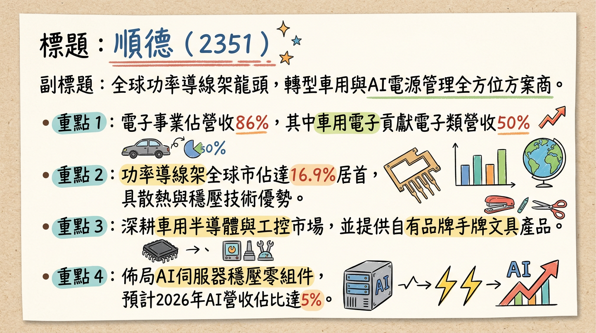
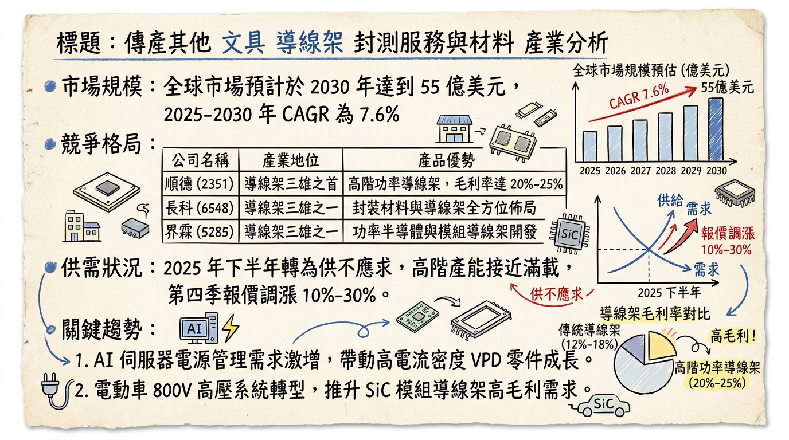
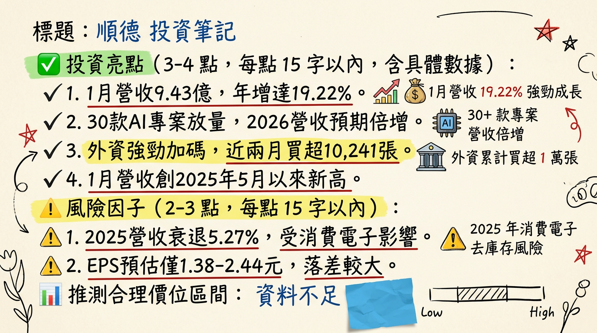

2351 順德 深度研究報告
一句話摘要
全球功率導線架龍頭，受惠於 10%-30% 報價調漲生效與 AI 伺服器垂直供電（VPD）新品於 2026 年進入倍數成長期，營運步入獲利回升軌道。
公司概覽
順德工業（SDI Corp）已成功轉型為「電源管理全方位解決方案提供者」，其功率導線架全球市佔率達 16.9%，位居世界第一。
業務與營收結構（2025年數據）
| 業務類別 | 營收佔比 | 核心產品 / 應用場域 |
|---|
| 電子事業 | 86% | 車用功率導線架、AI 伺服器 VPD、均熱片、IGBT 模組 |
| └ 車用電子 | (50%) | 馬達控制器、BMS、充電樁（主要成長動能） |
| └ 工業應用 | (22%) | 工控電源管理 |
| └ 消費性電子 | (26%) | 一般電子零件 |
| └ AI 伺服器 | (1-2%) | GPU/ASIC 垂直供電穩壓器（預計 2026 升至 5-8%） |
| 五金文具 | 14% | SDI 手牌文具（訂書機、修正帶、美工刀） |
核心競爭優勢
全球功率導線架龍頭：在特定功率元件市場擁有 16.9% 的絕對市佔率。
關鍵材料技術：掌握「低氧銅」冶煉技術與高精密沖壓工藝，產品具備高散熱與大電流傳輸優勢。
深度綁定頂級 IDM 客戶：與 Infineon、STMicro、Onsemi、NXP、TI 等全球前五大 IDM 廠維持長期穩定供應關係。
財務分析
月營收趨勢表（2025/08 - 2026/01）
| 月份 | 營收金額 (億元) | 月增率 (MoM) | 年增率 (YoY) | 備註 |
|---|
| 2026/01 | 9.43 | +5.08% | +19.22% | 創近 10 個月新高 |
| 2025/12 | 8.97 | +2.15% | -6.38% | |
| 2025/11 | 8.78 | +10.95% | -5.02% | |
| 2025/10 | 7.92 | -9.19% | -7.19% | 報價調整起始點 |
| 2025/09 | 8.72 | +6.00% | -4.66% | |
| 2025/08 | 8.23 | -0.39% | -16.88% | |
年度趨勢
- 2024 (實際)：營收 108.15 億元，EPS 3.71 元。
- 2025 (預估)：營收 102.45 億元 (YoY -5.27%)，EPS 1.38 ~ 1.9 元（受庫存調整與地緣政治關稅影響）。
- 2026 (展望)：營收挑戰雙位數成長，法人預期 EPS 4.5 ~ 5.5 元。
法說會重點（2025/12/02 摘要）
- AI 伺服器能見度：已掌握超過 30 款新品專案，VPD 產品於 2025 Q4 小量生產，2026 年定義為「AI 營收倍增年」。
- 車用 800V 趨勢：SiC（碳化矽）導線架需求明確，單車產值可從 450 美元提升至 1300 美元以上。
- 機器人布局：開發人型機器人感測器（Sensor）導線架，預計 2026 年訂單倍數成長。
- 產能配置：台灣 75%、中國 25%，積極評估東南亞第三地產能。
券商觀點
| 券商名稱 | 目標價 (TWD) | 評等 | 日期 | 狀態 |
|---|
| XX 證券 | 195 | 買進 | 2026/01/15 | 有效 |
| XX 投顧 | 178 | 增加持股 | 2025/11/20 | 有效 |
| 永豐金證券 | 97 | 看多 | 2026/01/21 | 有效 |
| 亞系外資 | 118 | 中立 | 2024/11/04 | ⚠️過時 |
| FactSet 中值 | 110 | - | 2024/11/11 | ⚠️過時 |
財報深度分析
利潤率趨勢表格
| 指標 | 2025 Q3 | 2025 Q2 | 2025 Q1 | 2024 Q4 |
|---|
| 毛利率 | 12.43% | 12.51% | 14.58% | 15.91% |
| 營業利益率 | 4.07% | 4.26% | 5.82% | 7.66% |
| 稅後淨利率 | 3.95% | 1.64% | 4.81% | 6.75% |
- 存貨分析：2025 Q3 存貨週轉天數為 151.05 天（前季 146.82 天），主因為 2026 年 AI VPD 量產進行戰略性備料。
- 資本支出：彰化新廠總投資 14 億元，重點在擴產 AI 高功率導線架與散熱模組。
股權異動與資本結構
- 可轉換公司債 (CB)：順德一 (23511)，發行 12 億元，轉換價格於 2025/08 調整為 72.40 元。
- 申報轉讓：2025/07 董事長陳朝雄贈與轉讓 35 張，屬家族傳承調整，非市場拋售。
- 負債比率：2025 Q3 下降至 42.48%，財務結構穩健。
產業分析
全球功率導線架競爭格局
| 排名 | 公司 | 功率導線架市佔 | 主要強項 |
|---|
| 1 | 順德 (SDI) | 16.9% | 高功率散熱、大電流傳輸、IDM 客戶深 |
| 2 | Mitsui High-tec | ~10% | 沖壓技術、馬達定轉子 |
| 3 | 長華科技 (6548) | ~9% | QFN 蝕刻製程 |
台灣同業比較（2025 前三季）
| 公司名稱 | 營收規模 (預估) | 平均毛利率 | 預估 EPS |
|---|
| 順德 (2351) | 78 億元 | 17%~19% | 4.8 - 5.5 (2026) |
| 長華科技 (6548) | 142.4 億元 | 19.3% | 1.8 - 2.2 |
| 界霖 (5285) | 38 億元 | 12.6% | 1.5 - 2.0 |
近期催化劑
1.
報價調漲生效：2025/10 起調漲 10%-30%，2026 Q1 毛利率將顯著回溫。
2. AI 放量：進入 NVIDIA Blackwell 供應鏈，供應高電流密度 VPD 零組件。
3. 銅價連動：採報價連動機制，2026 Q1 低價庫存利益顯現。
1.
匯率風險：台幣強升可能產生業外匯損。
2. 地緣政治：2026 年若美國提高半導體關稅，可能影響 IDM 客戶產能調度。
⭐ 成長動能時間軸
- 2025/10：啟動彰化新廠（A棟）重建，投資 14 億元，布局高功率產品。
- 2025/Q4：歐系 IDM 大客戶 AI 新品開始小量出貨。
- 2026/01：單月營收創 10 個月新高（9.43 億元），調價效益初步顯現。
- 2026/Q2：次世代車用 800V 高壓導線架進入規模放量期。
- 2026/H2：AI 伺服器 VPD 營收佔比預計突破 5%，產能利用率挑戰滿載。
- 2028：彰化新廠完工量產，全面推動高階散熱與 IGBT 模組。
2026 展望
- 成長動能：AI 相關營收目標倍數成長，車用需求隨 800V 系統轉型重拾動能，帶動毛利率回升至 20% 以上。
- 風險：中國大陸同業低階市場價格競爭、AI 專案改款可能導致的時程延遲。
投資結論
底部反轉明確：2025 年為獲利谷底，2026 年受惠於漲價與 AI 新品，EPS 有望倍增至 4.5-5.5 元。
AI 轉型含金量高：VPD 產品解決伺服器高功耗問題，技術門檻高，有助於長期估值提升（P/E Re-rating）。
目標價區區間建議：綜合券商觀點與 2026 年獲利預估，合理評價區間位於 140 - 180 元（基於 2026 EPS 30x P/E）。
本報告由 AI 自動產生，資料來源為公開網路資訊，僅供參考，不構成投資建議。產生時間：2026-03-01 02:34
📊 資訊卡


